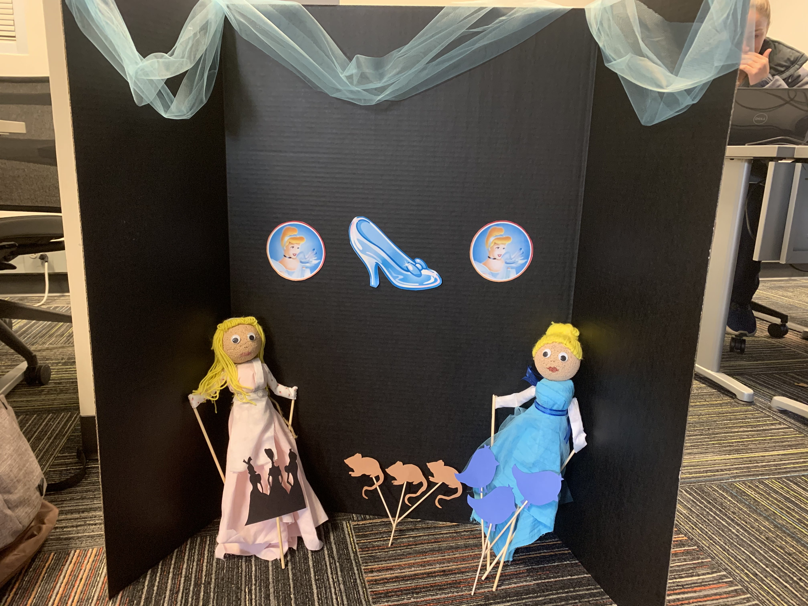

Our puppet performance features Cinderella as a Instagram influencer, inviting audience members to participate in her "Instagram controls my life" day. Audience members vote in Instagram polls on our puppet's profile. We use physical puppets as well as a PowerPoint with images, text, and music to act out the consequences of their choices. The polls either allow Cinderella to follow the classic storyline, or venture into a darker world. Intro and Outro videos provide context to the performance, but the happy tone shows how Cinderella is disconnected from the impact her followers' decisions, and her choice to abide by them, have on her life. This is our commentary on how real life Instagram influencers themselves can be "puppets" controlled by their followers.
Explore our site to see how we developed the story as well as the puppets in action!

The proud designers of this project:


Julie Nielsen, Keerthi Ramachandran, Aiza Shabbir, Rachel Techau